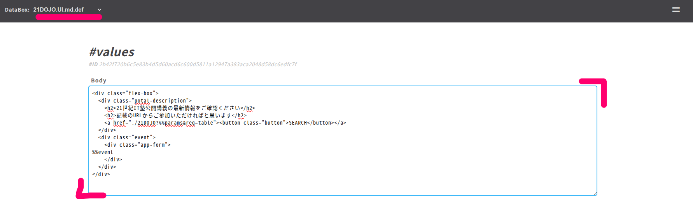
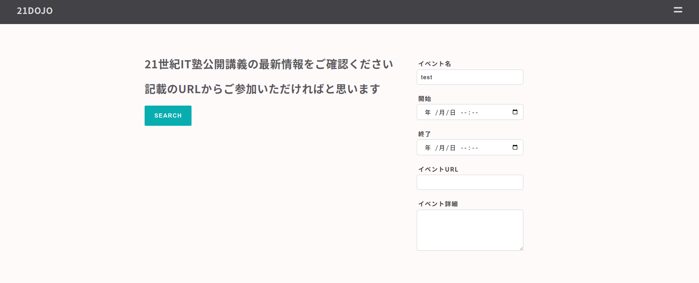

small shell Advanced
アプリ開発
small shellはそれ自体がシェルのため、Linux上で動きうるどんなものも呼びだすことができ、操作することができます。Application Shellの基本構造を理解することで、生成したCustom APPにLinuxコマンドでそのまま処理を追加でき、データを結合、加工することができます。本コースではCustom APPの生成とカスタマイズの流れをご説明します。それでは早速Custom APPを生成してApplication Shellの構造を読み解いていきましょう
Custom APPを使って作成するアプリケーションのシナリオは以下のとおりです
Webアプリシナリオ
1. アプリへはパスコードもしくは専用URL(QRコード化も可能)でアクセスする
2. 認証が成功した場合、アプリはイベントの詳細情報を表示する
3. 管理者はTeam APPでイベント管理をする
Team APPの生成
small shell基礎#2にてTeam APPはすでに作成済みかと思いますが、もし生成していない場合はTeam APPのinstallを参照のうえ生成してください
カスタムアプリ生成
早速Custom APPを生成してみましょう、ここでもgen dialogでのアプリケーション生成を行います。前提としてsmall-shell基礎#1で作成したBase APPが作られている必要がありますのでsmall-shell基礎#1を参照して生成しておいてください。
sudo /usr/local/small-shell/adm/gen -app
対話が始まりますが、ここではアプリケーションの名前は21DOJOとします、pass codeは任意の4桁の数字を入力しています
$ sudo /usr/local/small-shell/adm/gen -app
Type of APP (1.BASE | 2.FORM | 3.CUSTOM): 3
APP Name: 21DOJO
Type of Authentication (1.shared pass | 2.user key | 3.other | 4.none): 1
Shared Passcode: XXXX
Primary Databox: events
ログイン画面の確認
アプリケーションが生成されたのでアクセスしてみましょう
(アクセスURLはカスタムアプリ生成後に出力されます)
APP shell基本構造
アプリケーションシェルの構造を理解して、カスタムアプリを更新していきましょう。カスタムアプリ作成時に以下のようにコードを含むファイルが生成されたと思いますが、それぞれのコードは更新して機能を作りこんでいくことができます、本コースではあくまで構造の外観を説明するのみですので詳細はsmall shell公式サイトのAPP shellも参考にしてください
------------------------------------------------------------
Custom APP is successfully generated
Access URL: http://{サーバアドレス}/21DOJO
------------------------------------------------------------
Following is generated codes that you can update.
You can also update portal page on Base APP #21DOJO.UI.md.def using markdown.
/var/www/cgi-bin/auth.21DOJO
/var/www/cgi-bin/21DOJO
/var/www/cgi-bin/21DOJO_css
/var/www/bin/21DOJO_del.sh /var/www/bin/21DOJO_get.sh /var/www/bin/21DOJO_main.sh /var/www/bin/21DOJO_set.sh
/var/www/bin/21DOJO_dl.sh /var/www/bin/21DOJO_log_viewer.sh /var/www/bin/21DOJO_page_links.sh /var/www/bin/21DOJO_table.sh
/var/www/def/21DOJO_auth_form.html.def /var/www/def/21DOJO_get_new_master_failed.html.def /var/www/def/21DOJO_log_viewer.html.def
/var/www/def/21DOJO_del_err.html.def /var/www/def/21DOJO_get_ro.html.def /var/www/def/21DOJO_main.html.def
/var/www/def/21DOJO_get_err.html.def /var/www/def/21DOJO_get_rw.html.def /var/www/def/21DOJO_main.html.incmd.def
/var/www/def/21DOJO_get_new.html.def /var/www/def/21DOJO_get_rw_incf.html.def /var/www/def/21DOJO_set_err.html.def
/var/www/def/21DOJO_get_new_incf.html.def /var/www/def/21DOJO_get_rw_master_failed.html.def /var/www/def/21DOJO_table.html.def
ディレクトリ構造
コードは以下のとおり1.cgi-bin 2.bin 3.defに格納されますが、処理の順序も同様の並びとなります。クライアントから要求があるとcgi-bin配下のコントローラーが要求を受け付け、bin配下のスクリプトを呼び出し、スクリプトがdef配下のHTML定義を読み込みながら応答をクライアントに返すという順序で処理がされます
1. /var/www/cgi-bin # アプリケーション全体をコントロールするcontrollerプログラムを配置
2. /var/www/bin # 応答処理をAction scriptとして記述、DataBoxへの接続や分岐処理をする
3. /var/www/def # HTML及びCSSの定義を配置
URL構造
先ほど作成した21DOJOアプリのアクセス用URLは/21DOJOとなっているはずですが、これはauth.21DOJOというプログラムへサーバ側でリダイレクト(転送)され認証画面が表示されますのでアプリ生成時に設定したパスコードを入力してください
http://{サーバアドレス}/21DOJO --> 転送 --> http://{サーバアドレス}/cgi-bin/auth.21DOJO
認証が成功した場合、コントローラーへ自動で接続されます。ログイン後のURLをブラウザからコピーしてみてみましょう、URLはsession情報やsessionを保証するpinコードを含んでいます。また、req=mainという記述も確認できると思いますが、これはmainページのリクエストを意味します
http://{サーバアドレス}/cgi-bin/21DOJO?session=26a289bf7eedac7dfe4e26aa33a912bd36745e158c3592728446f9e57cf1b117&pin=13913&req=main
QUERY STRING
QUERY STRING(クエリーストリング)とはURLに付加するパラメーターですが、プログラムの後に?を付けてパラメーターを記述することでプログラムに値を渡すことができます。上記req=mainというパラメーターはsmall shelフレームワーク上でreqという変数に格納されるmainという値として展開します、また&を付けることで複数のQUERY STRINGをURLに連結していくことができます
コントローラー
コントローラーはcgi-bin配下に置かれ、認証後のセッションの維持やrequest毎にbin配下のactionスクリプトへのルーティングを記述しています。21DOJOアプリのコントローラーの中身を見てみましょう。cgi-bin配下には設定したアプリケーション名がそのままプログラムとして生成され、コントローラーとして機能します
ルーティング
cgi-bin配下の21DOJOをcatで確認するとルーティングがコード自体に埋め込まれていることが確認できます。req変数(上述のURLではmainが格納された)に入っている内容に応じてcase分で分岐処理を行いますが、small shellフレームワークではこのcase文をルーティングと呼んでいます。また、ルーティングに際してコントローラーはQUERY STRINGとして渡されたパラメーターを変数に格納して後続処理に渡します
$ sudo tail -48 /var/www/cgi-bin/21DOJO
#----------------------------
# routing to action scripts
#----------------------------
case "$req" in
"main")
/var/www/bin/21DOJO_main.sh session:$session pin:$pin user_name:$user_name ;;
"get")
# if its replica host, master definition will be in ./def/.small-shell.conf
if [ ! "$master" ];then
/var/www/bin/21DOJO_get.sh session:$session pin:$pin user_name:$user_name id:$id duplicate:$duplicate databox:$databox
else
sync=$(${small_shell_path}/bin/extension_auth app:21DOJO sync:${session}@${master})
if [ "$sync" = "synced" ];then
redirect=yes
else
redirect=no
fi
/var/www/bin/21DOJO_get.sh session:$session pin:$pin user_name:$user_name id:$id duplicate:$duplicate redirect:$redirect databox:$databox
fi
;;
"set")
/var/www/bin/21DOJO_set.sh session:$session pin:$pin user_name:$user_name id:$id databox:$databox ;;
"del")
/var/www/bin/21DOJO_del.sh session:$session pin:$pin user_name:$user_name id:$id databox:$databox ;;
"table")
table_command="$(echo $table_command | $SED "s/ /{%%space}/g")"
/var/www/bin/21DOJO_table.sh session:$session pin:$pin user_name:$user_name id:$id page:$page table_command:$table_command line:$line ;;
"log_viewer")
/var/www/bin/21DOJO_log_viewer.sh session:$session pin:$pin id:$id databox:$databox ;;
"file")
/var/www/bin/21DOJO_dl.sh session:$session pin:$pin id:$id ;;
# sub app routing section
*)
echo "error: wrong request";;
esac
exit 0
Parse (パース)
ルーティングに至る前処理としてクライアントから送信(POST) された要求を解析するプログラムとしてparse.shが使用されます。controllerに、例えばitem.dbというデータボックスの主keyであるitem_nameの値をPOSTした場合、controllerは/var/www/tmp/$session配下にitem_nameというファイルを作り、そこにPOSTされたアイテム名を格納します。$sessionは要求の都度生成されるsession値が入ります。詳細はparseを翻訳して確認してください
Note
QUERY STRINGとPOSTはともにサーバにクライアントからデータを渡しますがそれぞれ方法が異なります。QUERY STRINGは前述のとおりURLに埋め込まれていますが、POSTデータは主にフォームを通じてデータ送信されます
スクリプト
コントローラーがルーティングを通じて呼び出すのがbin配下のスクリプトですが、ユーザーへの応答を返すのはこちらのスクリプトになります。主な処理としてはデータシェルへ接続して特定のidを持つデータを抽出したうえで所定のHTML defのHTMLファイルに動的な情報を埋め込んで返します。その際、動的情報の埋め込みとしては%%タグ(印)をsedで置き換えるという処理を行っています。
データシェルへの接続部分はget.shの中の以下処理となります
$ grep DATA_SHELL /var/www/bin/21DOJO_get.sh | grep html
$DATA_SHELL databox:$databox action:get id:$id keys:$keys format:html_tag > /var/www/tmp/$session/dataset
また、HTMLを還す際は以下のようにsedで%%datasetタグの中に上記で抽出した情報を埋め込みます
$ sudo tail -20 /var/www/bin/21DOJO_get.sh
# render HTML
cat /var/www/def/${view} | $SED -r "s/^( *)</</1" \
| $SED "/%%common_menu/r /var/www/def/common_parts/21DOJO_common_menu" \
| $SED "/%%common_menu/d" \
| $SED "s/%%user/$user_name/g"\
| $SED "/%%dataset/r /var/www/tmp/$session/dataset" \
| $SED "s/%%dataset//g"\
| $SED "/%%history/r /var/www/tmp/$session/history" \
| $SED "s/%%history//g"\
| $SED "s/%%id/$id/g" \
| $SED "s/%%pdls/session=$session\&pin=$pin\&req=get/g" \
| $SED "s/%%session/session=$session\&pin=$pin/g" \
| $SED "s/%%params/session=$session\&pin=$pin\&databox=$databox/g"
if [ "$session" ];then
rm -rf /var/www/tmp/$session
fi
exit 0
HTML(.def)
bin配下のスクリプトが呼び出しているHTMLの定義も見てみましょう。HTMLの以下%%dataset部分にスクリプトがデータを埋め込みます
$ cat /var/www/def/21DOJO_get_rw.html.def | grep -2 %%dataset | sed -r "s/^(.*)</</g"
<form method="post" action="./21DOJO?%%params&req=set&id=%%id" onclick="document.charset='utf-8';">
<ul>
%%dataset
</ul>
</button>
アプリのカスタマイズ
大枠の構造を理解いただいたところで、さっそくアプリのカスタマイズを行っていきましょう。
keyの再定義
まずは今回の目的に応じてDataBoxを拡張しましょう。Team APPのデフォルトのevents定義から今回作成したアプリに適したコンテンツになるよう、genコマンドで再定義していきましょう
新規イベント登録画面

keyの追加削除にはgenコマンドを使用します。不要なkeyをまずは消しましょう。
$ sudo /usr/local/small-shell/adm/gen -delcol
Databox Name: events
column's key name: description
Delete more column from the databox? (yes | no) : no
続いて必要なkeyを追加していきます
$ sudo /usr/local/small-shell/adm/gen -addcol
Databox Name: events
Col7 Key Name: url
Col7 Key Label: イベントURL
Data Type (text | select | radio | checkbox | email | num | tel | date | date-time | url | textarea | file | pdls | mls): url
Set this as required? (yes | no): no
Add more columns to the databox? (yes | no) : yes
Col8 Key Name: detail
Col8 Key Label: イベント詳細
Data Type (text | select | radio | checkbox | email | num | tel | date | date-time | url | textarea | file | pdls | mls): textarea
Set this as required? (yes | no): no
Add more columns to dataset ? (yes | no) : no
更新後のイベント追加画面

ポータルのアップデート
続いて21DOJOへのログイン時に最初に表示されるポータルページに最新のイベント情報が出てくるようにしましょう
HTML編集
今回のポータルページはより構造的な情報を表示したいため、markdownでは記述せずHTMLを記述しましょう。Base APPログイン後、21DOJO.md.defデータボックスを選択して定義を更新しましょう。 以下の通りBodyを全て消して以下を貼り付けて更新してください。 
<div class="flex-box">
<div class="potal-description">
<h2>21世紀IT塾公開講義の最新情報をご確認ください</h2>
<h2>記載のURLからご参加いただければと思います</h2>
<a href="./21DOJO?%%params&req=table"><button class="button">SEARCH</button></a>
</div>
<div class="event">
<div class="app-form">
%%event
</div>
</div>
</div>
以下が更新後の画面です、現時点で%%eventタグが埋め込まれていないためそのまま%%eventタグが表示されています、またeventの位置があまりよくないためcssをつかって位置を調整しましょう

アプリ毎のcss定義については直接編集が可能です
sudo nano /var/www/def/21DOJO.css.def
nanoでファイルを開いたら以下コードを一番下に貼り付けましょう、ctrl + Vでページを進むことができます
.flex-box {
display:flex;
flex-wrap:wrap;
}
.event {
padding-left: 48px;
}
main.sh
続いて21DOJOのmain.shにて%%eventタグの変換処理をいれます。”#以下行を追加”とある処理を追加し、"#以下行をコメントアウト"と記載のある箇所はコメントアウトしてください。 具体的な処理としてはdataboxの最新の1行目のエントリーをhead -1でサーチして、idを取得、データをeventファイルに書き出したのちsedで%%eventを上書しています
$ sudo nano /var/www/bin/21DOJO_main.sh
--対象コード--
# SET BASE_COMMAND
META="${small_shell_path}/bin/meta"
DATA_SHELL="${small_shell_path}/bin/DATA_shell session:$session pin:$pin app:21DOJO"
# 以下行を追加
id=$($DATA_SHELL databox:events command:head_-1 format:none | $AWK -F "," '{print $1}')
$DATA_SHELL databox:events action:get id:$id keys:name,start,end,url,detail format:html_tag > ../tmp/$session/event
# -----------------
# render HTML
# -----------------
# 以下行をコメントアウト
#cat /var/www/def/21DOJO_main.html.def | $SED -r "s/^( *)</</1" \
#| $SED "/%%common_menu/r /var/www/def/common_parts/21DOJO_common_menu" \
#| $SED "s/%%common_menu//g"\
#| $SED "/%%events/r /var/www/tmp/$session/events" \
#| $SED "/%%event_add_btn/r /var/www/tmp/$session/event_add_btn" \
#| $SED "s/%%event_add_btn//g"\
#| $SED "s/%%user/$user_name/g" \
#| $SED "s/%%session/session=$session\&pin=$pin/g" \
#| $SED "s/%%params/session=$session\&pin=$pin/g"
# 以下行を追加
cat /var/www/def/21DOJO_main.html.def | $SED -r "s/^( *)</</1" \
| $SED "/%%common_menu/r /var/www/def/common_parts/21DOJO_common_menu" \
| $SED "s/%%common_menu//g"\
| $SED "s/%%user_name/$user_name/g" \
| $SED "/%%event/r ../tmp/$session/event" \
| $SED "s/%%event//g" \
| $SED "s/%%session/session=$session\&pin=$pin/g" \
| $SED "s/%%params/session=$session\&pin=$pin/g"
完成したポータルはこちらになります 
Note
イベントが何も登録されていないときは"error: please input id"というメッセージが表示されるため、イベントを登録して下さい
Read onlyへの変更
21DOJOはshared passのためシステムユーザーしかもちませんが、このユーザーをread onlyに変更することでアプリ全体が読み取り権限のみとなり書き込みができなくなります
$ sudo /usr/local/small-shell/adm/ops set.attr:21DOJO.app{ro} app:21DOJO
successfully set attr peremission 21DOJO/21DOJO.app{ro}"
閲覧keyの制限
管理目的以外で使用しないkeyは21DOJOアプリからは閲覧できないようkeys=allをコメントアウトして閲覧可能なkeyを制限しましょう。
以下はkey制限前のテーブルイメージです
keyを制限するため、/bin配下のスクリプトを編集します
sudo nano /var/www/bin/21DOJO_table.sh
--対象コード--
#keys=all
keys=name,start,end,url,detail
---------
sudo nano /var/www/bin/21DOJO_get.sh
--対象コード--
#keys=all
keys=name,start,end,url,detail
---------
コード編集後にkeyが制限されたことを確認してください
チケットURL整備
より簡易的なアクセスができるよう、URL自体にpass codeを埋め込みアクセスしてみましょう、そうすることで認証画面なしで自動ログインが可能です
URLデザイン
以下はpass codeとして1234を設定したアプリにQUERY STRINGを利用してログインするためのURLの例です。アプリをインターネット公開している場合はこのURLをQRコード生成サイトなどでQRコード化すればスマホなどでアクセスと自動ログインが可能になります
http://{サーバアドレス}/cgi-bin/auth.21DOJO?app_pass=1234
その他の高度な機能
Graph生成
pyshellを使うことで容易にGraph生成ができます、まずはsmall shell公式サイトを確認してpython及びlibraryのインストールをしてください。公式サイトはChromeの翻訳機能を使えば日本語での閲覧が可能です
公式サイトの手順通りにpyshellのセットアップが完了しているか確認しましょう、以下ではenv設定が適切に実施されpython3.12がインストールされていることを確認します
$ cat /usr/local/small-shell/util/pyshell/env | grep PYTHON
PYTHON="/usr/local/bin/python3.12"
$ ls /usr/local/bin/python3.12
/usr/local/bin/python3.12
日本語を扱えるようにフォントをインストールしてフォント定義を変更しましょう
# フォントインストール
$ sudo apt install fonts-ipaexfont
$ sudo vi /usr/local/small-shell/util/pyshell/env
--code--
font_family="IPAexGothic"
--------
# キャッシュの削除
$ sudo -u small-shell rm /home/small-shell/.cache/matplotlib/fontlist-*.json
Snapshot Graph
pyshell環境が適切に設定できていたら、utility scriptであるcountup.shを使ってスナップショットグラフを作成しましょう。スナップショットグラフとはpyshell実行時点のデータを集計し、記録したグラフです。スナップショット以外にデータ蓄積を前提としたhourly, daily, monthlyのグラフの作成が可能です。以下はsmall-shell基礎#1でアンケート集計のために作成したsurvey.dbを"良い"、"普通"、"悪い"でそれぞれデータを集計するコマンド例になります
$ sudo -u small-shell /usr/local/small-shell/util/scripts/countup.sh databox:survey.db key:impression filters:良い,普通,悪い type:pie frequency:snapshot
タイトルを入れたい場合はtitleも入力してください、ここではタイトルにスペースを使わず"2024-12-02_調査結果"としています
$ sudo -u small-shell /usr/local/small-shell/util/scripts/countup.sh databox:survey.db key:impression filters:良い,普通,悪い title:2024-12-02_調査結果 type:pie frequency:snapshot
Note
countup.shは指定のDataBoxのデータに対し指定のwordで検索をかけ、その件数を集計しグラフにします
Graphの確認
countup.shの実行がエラーなく完了したらconsoleでgraphを確認しましょう、command lineに#statsと打ち込めば作成されたグラフの一覧が出てきます。

Title付きのグラフをクリックしてみましょう、グラフがポップアップで表示されます
Graphの削除
Graphを削除したい場合は、統計データを蓄積しているstatisticsディレクトリで直接データを消してください
$ ls /usr/local/small-shell/util/statistics/graph
countup_s_20241202_db_survey.db_impression_filtered.png countup_s_20241202_db_survey.db{2024-12-02_調査結果}impression_filtered.pn
$ sudo rm /usr/local/small-shell/util/statistics/graph/countup_s_20241202_db_survey.db_impression_filtered.png
$ sudo rm /usr/local/small-shell/util/statistics/rawdata/countup_s_20241202_db_survey.db_impression_filtered.csv
定期ジョブの登録
定期ジョブを用いて、提携処理を自動で実行することができます。ここではグラフを定期取得するためのジョブを登録しましょう、small shellでは対話を通じたcronへのジョブ登録が可能です
ジョブの生成と登録
以下では先ほど実行したcountup.shを毎日0時0分に実行するジョブを登録しています
$ sudo /usr/local/small-shell/adm/gen -job
job name: gen_survey_graph
Type of job (1.job automation | 2.file exchange) : 1
--Define schedule--
Month [ any | 1-12 ]: any
Date [ any | 1-31 ]: any
Hour [ any | 0-23 ]: 0
Min [ any | 0-59 ]: 0
Week [ any | mon - sun ]: any
Exec command or batch script: /usr/local/small-shell/util/scripts/countup.sh databox:survey.db key:impression filters:良い,普通,悪い type:pie frequency:snapshot
Note
genコマンドで登録されるジョブは自動でsmall-shellユーザー権限で実行されます
バッチスクリプトを指定すると最終確認が求められますので問題なければyesと入力しましょう
job will be generated by following order, please check it
-----------------------------------------------------------------
jobtype: 1.job automation
job_name: gen_survey_graph
min: 0
hour: any
date: any
month: any
week: any
exec_command: /usr/local/small-shell/util/scripts/countup.sh databox:survey.db key:impression filters:良い,普通,悪い type:pie frequency:snapshot
-----------------------------------------------------------------
Is it OK ? (yes | no): yes
Succesfully generated. job definition is here
def: /usr/local/small-shell/util/e-cron/def/gen_survey_graph.def
Please enable job "sudo -u small-shell /usr/local/small-shell/bin/e-cron enable.gen_survey_graph"
$ sudo -u small-shell /usr/local/small-shell/bin/e-cron enable.gen_survey_graph
gen_survey_graph is succesfully enabled
$ sudo -u small-shell /usr/local/small-shell/bin/e-cron ls
--------------------------------------------------------------
job definition: /usr/local/small-shell/util/e-cron/def
--------------------------------------------------------------
del_session.enabled
del_util_log.enabled
gen_survey_graph.enabled
$ sudo -u small-shell /usr/local/small-shell/bin/e-cron exec.gen_survey_graph
gen_survey_graph successfully completed
$ sudo -u small-shell /usr/local/small-shell/bin/e-cron stat
--------------------------------------------------------
LATEST STATUS OF JOB
--------------------------------------------------------
2022-03-30 21:27:53 del_session successfully completed
2022-04-19 20:22:18 gen_survey_graph successfully completed
さらなる学習のために
small shell公式サイトにはより詳細で高度なドキュメントが公開されていますので是非読み解いて下さい。次章では21世紀のデジタル化社会を生きる上で必要不可欠な耐性として考慮されるDigital耐性についてご説明します